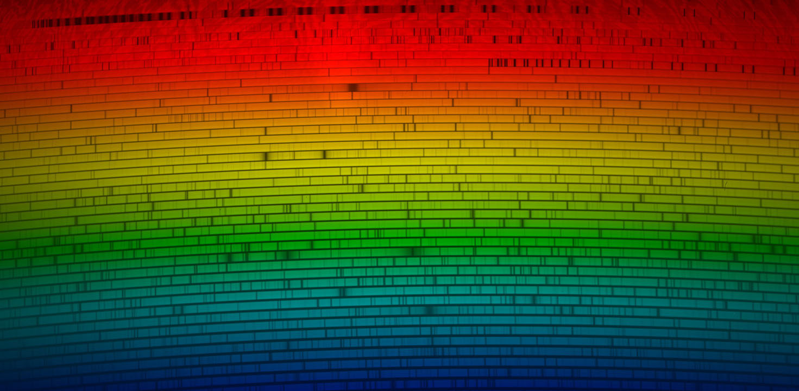

With large samples of planets we can begin to measure the statistical properties of the exoplanet population.
I am interested in two big questions about exoplanets in general:
With large samples of planets we can begin to measure the statistical properties of the exoplanet population.
I am interested in two big questions about exoplanets in general:
I am primarily interested in measuring the masses, locations, and frequency of nearby exoplanets. I use high-resolution optical spectrographs to precisely measure the Doppler shifts stars as they wobble under the gravitational influence of orbiting planets. 
Telescope automation is the way forward in observational astronomy. Cutting edge research requires massive datasets that can not be collected by humans manually driving telescopes from star to star. Advances in computing and weather monitoring have allowed software to take the night shift, freeing up more time for astronomers to analyze and interpret the data. I wrote much of the high-level automation software that runs the Automated Planet Telescope (APF) at Lick Observatory. This telescope is now operating autonomously every clear night, surveying bright, nearby stars for Earth-like planets.
With large samples of planets we can begin to measure the statistical properties of the exoplanet population.
I am interested in two big questions about exoplanets in general:
General purpose toolkit for modeling radial velocity time-series data using Bayesian techniques.
Toolkit for the analysis of high-resolution optical spectra to extract fundamental stellar parameters.